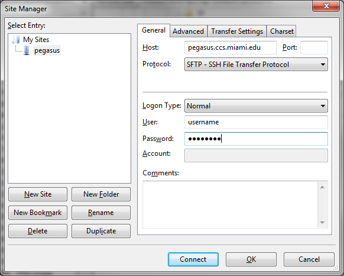

Transferring Files¶
IDSC systems support multiple file transfer programs such as FileZilla and
PSFTP, and common command line utilities such as scp and rsync.
Use cluster head nodes (login nodes) for these types of file transfers.
For transferring large amounts of data from systems outside the
University of Miami, IDSC ACS also offers a gateway server that supports
SFTP and Globus.
Using command line utilities¶
Use cp to copy files within the same computation system. Use
scp, sftp, or rsync to transfer files between computational
systems (e.g., from scratch space to Visx project space). When executing
multiple instantiations of command line utilities like rsync and scp,
please *limit your transfers to no more than 2-3 processes at a
time.*
scp¶
An example transfer might look like this:
[localmachine: ~]$ scp /local/filename \
username@pegasus.ccs.miami.edu:/scratch/projectID/directory
To transfer a directory, use the -r (recursive) flag :
[localmachine: ~]$ scp -r /local/directory \
username@pegasus.ccs.miami.edu:/scratch/projectID/directory
Consult the Linux man pages for more information on scp.
rsync¶
The rsync command is another way to keep data current. In contrast to
scp, rsync transfers only the changed parts of a file (instead of
transferring the entire file). Hence, this selective method of data
transfer can be much more efficient than scp. The following example
demonstrates usage of the rsync command for transferring a file named
“firstExample.c” from the current location to a location on Pegasus.
[localmachine: ~]$ rsync firstExample.c \
username@pegasus.ccs.miami.edu:/scratch/projectID/directory
An entire directory can be transferred from source to destination by
using rsync. For directory transfers, the options -atvr will
transfer the files recursively (-r option) along with the
modification times (-t option) and in the archive mode (-a
option). Consult the Linux man pages for more information on rsync.
rclone¶
The rclone a command-line program that can be used to manage your file
over SFTP. Rclone supports over 40 cloud storage backends, as well as standard
transfer protocols like SFTP. This is a use case using rclone to migrate
data from legacy storage to IDSC CES on apex.idsc.miami.edu using the
latest version of rclone on Pegasus, rclone v1.63.1.
Load the rclone software module
[nra20a@login4 ~]$ module load rclone
[nra20@login4 ~]$ module list
Currently Loaded Modulefiles:
1) perl/5.18.1(default) 2) rclone/1.63.1
[nra20@login4 ~]$ rclone -V
rclone v1.63.1
- os/version: centos 7.6.1810 (64 bit)
- os/kernel: 3.10.0-957.el7.x86_64 (x86_64)
- os/type: linux
- os/arch: amd64
- go/version: go1.20.6
- go/linking: static
- go/tags: none
Configure a new remote
1. Login to Pegasus
$ ssh pegasus.ccs.miami.edu
2. Create a new Remote
[pdavila@login4 ~]$ rclone config
No remotes found - make a new one
n) New remote
s) Set configuration password
q) Quit config
n/s/q> n
name> apex
3. Select your Storage Option (SSH/SFTP Connection “sftp”)
...
Option Storage.
Type of storage to configure.
Choose a number from below, or type in your own value.
...
40 / SSH/SFTP Connection "sftp"
...
Storage> 40
4. Enter apex host name
Option host.
SSH host to connect to.
E.g. "example.com".
Enter a value.
host> apex.idsc.miami.edu
5. Enter your username
Option user.
SSH username.
Enter a string value. Press Enter for the default (pdavila).
user> pdavila
6. Enter port number (leave blank)
Option port.
SSH port number.
Enter a signed integer. Press Enter for the default (22).
port>
7. Enter your password
Option pass.
SSH password, leave blank to use ssh-agent.
Choose an alternative below. Press Enter for the default (n).
y) Yes, type in my own password
g) Generate random password
n) No, leave this optional password blank (default)
y/g/n> y
Enter the password:
password:
Confirm the password:
password:
8. Option key files (can be left blank by default)
Option key_pem.
Raw PEM-encoded private key.
If specified, will override key_file parameter.
Enter a value. Press Enter to leave empty.
key_pem>
Option key_file.
Path to PEM-encoded private key file.
Leave blank or set key-use-agent to use ssh-agent.
Leading `~` will be expanded in the file name as will environment variables such as `${RCLONE_CONFIG_DIR}`.
Enter a value. Press Enter to leave empty.
key_file>
9. Option key file password (type your own password)
Option key_file_pass.
The passphrase to decrypt the PEM-encoded private key file.
Only PEM encrypted key files (old OpenSSH format) are supported. Encrypted keys
in the new OpenSSH format can't be used.
Choose an alternative below. Press Enter for the default (n).
y) Yes, type in my own password
g) Generate random password
n) No, leave this optional password blank (default)
y/g/n> y
Enter the password:
password:
Confirm the password:
password:
10. Public key options (Can be left blank by default)
Option pubkey_file.
Optional path to public key file.
Set this if you have a signed certificate you want to use for authentication.
Leading `~` will be expanded in the file name as will environment variables such as `${RCLONE_CONFIG_DIR}`.
Enter a value. Press Enter to leave empty.
pubkey_file>
Option key_use_agent.
When set forces the usage of the ssh-agent.
When key-file is also set, the ".pub" file of the specified key-file is read and only the associated key is
requested from the ssh-agent. This allows to avoid `Too many authentication failures for *username*` errors
when the ssh-agent contains many keys.
Enter a boolean value (true or false). Press Enter for the default (false).
key_use_agent>
11. Insecure cipher and hash options can be left blank by default
Option use_insecure_cipher.
Enable the use of insecure ciphers and key exchange methods.
This enables the use of the following insecure ciphers and key exchange methods:
- aes128-cbc
- aes192-cbc
- aes256-cbc
- 3des-cbc
- diffie-hellman-group-exchange-sha256
- diffie-hellman-group-exchange-sha1
Those algorithms are insecure and may allow plaintext data to be recovered by an attacker.
This must be false if you use either ciphers or key_exchange advanced options.
Choose a number from below, or type in your own boolean value (true or false).
Press Enter for the default (false).
1 / Use default Cipher list.
\ (false)
2 / Enables the use of the aes128-cbc cipher and diffie-hellman-group-exchange-sha256, diffie-hellman-group-exchange-sha1 key
exchange.
\ (true)
use_insecure_cipher>
Option disable_hashcheck.
Disable the execution of SSH commands to determine if remote file hashing is available.
Leave blank or set to false to enable hashing (recommended), set to true to disable hashing.
Enter a boolean value (true or false). Press Enter for the default (false).
disable_hashcheck>
Edit advanced config?
y) Yes
n) No (default)
y/n>
12. Configurations are now complete and will be shown, you can type in ‘q’ to quit the config menu
Configuration complete.
Options:
- type: sftp
- host: apex.idsc.miami.edu
- pass: *** ENCRYPTED ***
- key_file_pass: *** ENCRYPTED ***
Keep this "apex" remote?
y) Yes this is OK (default)
e) Edit this remote
d) Delete this remote
y/e/d>
Current remotes:
Name Type
==== ====
apex sftp
e) Edit existing remote
n) New remote
d) Delete remote
r) Rename remote
c) Copy remote
s) Set configuration password
q) Quit config
e/n/d/r/c/s/q>q
Transfer your data to remote site
The rclone lsd command will list the folders of the current specified path in the remote system
[nra20@login4 ~]$ rclone lsd apex:/
-1 2023-08-09 10:36:35 -1 acs
-1 2022-11-04 15:20:10 -1 bin
-1 2022-11-28 15:36:50 -1 dcrawford
-1 2022-11-04 15:19:15 -1 lib64
-1 2022-09-30 18:17:33 -1 netra
-1 2022-09-13 18:12:26 -1 schurerlab
-1 2023-08-08 17:35:21 -1 selipot
You can create a subdirectory if needed using the rclone mkdir command
[nra20@login4 ~]$ rclone mkdir apex:/acs/nra20
[nra20@login4 ~]$ rclone lsd apex:/acs
-1 2022-06-08 12:40:43 -1 mihg-mapping
-1 2023-08-09 10:39:04 -1 nra20
-1 2022-11-04 15:23:17 -1 pdavila
Note: Because rclone copy command can take hours to complete, we recommend you use the screen command when running rclone interactively. This way the sync will not terminate prematurally, should your ssh session end.
[pdavila@login4 ~]$ screen
[pdavila@login4 ~]$ rclone copy /projects/ccs/schurerlab/cheminfo/pdavila apex:/schurerlab/pdavila
[pdavila@login4 ~]$ rclone lsd apex:/schurerlab/pdavila/apps/
-1 2022-06-23 10:36:21 -1 bin
-1 2022-06-23 10:36:21 -1 ffmpeg
-1 2022-06-23 10:36:21 -1 firefox
-1 2022-06-23 10:36:21 -1 wget
You can exit your screen session using the ‘exit’ command.
Using FileZilla¶
FileZilla is a free, user friendly, open source, cross-platform FTP, SFTP and FTPS application.
Download the FileZilla client here: https://filezilla-project.org/download.php?show_all=1 and follow the installation instructions for the appropriate platform (http://wiki.filezilla-project.org/Client_Installation).
Launch FileZilla and open File : Site Manager.
Click the “New Site” button and name the entry. Pegasus example:
Host: pegasus.ccs.miami.edu | triton.ccs.miami.edu | apex.idsc.miami.edu (CES)
Protocol: SFTP
Logon Type: Normal
enter your username and password
Selecting Logon Type: Ask for password will prompt for a password each connection.
Remember: Pegasus and Apex use your IDSC account for authentication. Triton uses your CaneID.
Click the “Connect” button. Once connected, drag and drop files or directories between your local machine and the server.
Using the gateway server¶
To transfer large amounts of data from systems outside the University of Miami, use the gateway server. This server supports SFTP file transfers. Users *must be a member of a project* to request access to the gateway server. E-mail hpc@ccs.miami.edu to request access.
SFTP¶
Host: xfer.ccs.miami.edu
protocol: SFTP
user: caneid
pw: [UM caneid passwd]
Folder: download/<projectname>
Open an SFTP session to the gateway server using your IDSC account
credentials: xfer.ccs.miami.edu
[localmachine: ~]$ sftp username@xfer.ccs.miami.edu
sftp> cd download
sftp> mkdir <project>
sftp> cd project
sftp> put newfile